电路原理习题册·第五章 正弦稳态电路的分析（选择 31 / 填空 21 / 计算 10）
1. 来源与边界
来源与前几章同一本习题册。第五章占书第 23–31 页，选择 31 + 填空 21 + 计算 10，共 62 题，
配图 5.1–5.31（缺 5.22，编号跳过；30 张已入库）。相量记号：U̇、İ 为有效值相量，İ_m 为幅值相量；
正弦量按 Asin(ωt+φ) 抄录，角度与正负号以页面图像为准。
2. 依赖
3. 选择题
选 1、15
有效值 2 A、初相 −30°，正确的表示是（ ）。
解答
有效值相量 I˙=2∠−30° A，两题均选 D。A 把有效值当幅值；B 的 I˙m 应为
22∠−30°；C 把相量写成了瞬时值记号。
复盘
I˙ 配有效值、I˙m 配幅值——记号与数值必须配套，两处错一处即错项。
选 2（图 5.1）
5Ω 串 −j5Ω，功率因数（ ）。
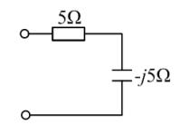
解答
∣Z∣=52，cosφ=R/∣Z∣=0.707，选 C。
复盘
R 与 X 相等时 cosφ=0.707——最常考的数值。
选 3（图 5.2）
A 读 10A、A₁ 读 6A（R 支路），A₂（C 支路）读数（ ）。
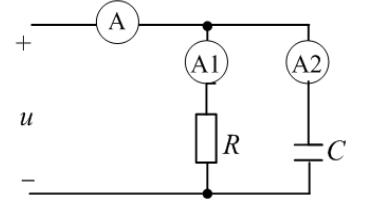
解答
电阻电流同相、电容电流超前 90°：I=I12+I22 → I2=102−62=8，选 B。
复盘
有效值不能直接加减（6+8=14 是陷阱项），要用相量的直角三角形。
选 4
容抗与 ω 成（ ），感抗与 ω 成（ ）。
解答
XC=1/ωC 反比、XL=ωL 正比，选 C。
复盘
定义式直接读。
选 5
U˙=10∠0° V、I˙=5∠60° A（关联），吸收的有功功率（ ）。
解答
P=UIcosφ=10×5×cos60°=25 W，选 C。
复盘
关联方向下 P>0 = 吸收；φ=φu−φi=−60°，余弦偶函数符号不影响。
选 6
u=5sin(100πt+45°) V 的频率 f=（ ）。
解答
f=ω/2π=100π/2π=50 Hz，选 C。
复盘
ω 除以 2π，别把 100 当成频率。
选 7
U˙=10∠0° V、I˙=5∠30° A，吸收的无功功率（ ）。
解答
Q=UIsinφ=50×sin(0−30°)=−25 var，选 C。
复盘
电流超前电压（φ<0）= 容性 = 发出感性无功，Q 为负。
选 8（图 5.3）
为使 R 获得最大功率，R=（ ）Ω。
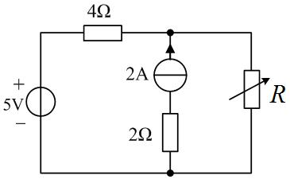
解答
与第四章图 4.2 同图：2A 与 2Ω 串联支路置零后整支路消失，R0=4 Ω，选 B。
复盘
原书把第四章的图重印在这里——最大功率题只看 R0，与激励大小无关。
选 9
电阻元件伏安关系中错误的是（ ）。
解答
D 错：U˙=Ri(t) 把相量与瞬时值混写（应为 U˙=RI˙ 或 u=Ri）。选 D。
复盘
A/B/C 都是同一关系的正确写法（时域/有效值/相量），D 的量纲记号断裂。
选 10（图 5.4）
I˙=1∠0° A，电压滞后电流 36.9°，P=80 W，U˙=（ ）。
解答
U=P/(Icos36.9°)=80/0.8=100 V；滞后 → φu=−36.9°：U˙=100∠−36.9°，选 D。
复盘
「电压滞后电流」= 容性 = φu<φi，角度往下减。
选 11
R、L 串联：总电压 30V、电感电压 18V，电阻电压（ ）。
解答
UR=302−182=24 V，选 B。
复盘
串联电压三角形，直角边合成斜边。
选 12（图 5.5）
I 与 U 的表达式正确的是（ ）。
解答
I=U/∣Z∣=U/R2+(XL−XC)2，选 D。
复盘
A/B 忘了「平方和开方」，C 丢掉了 XL 与 XC 先相减——两条都是串联阻抗的经典错式。
选 13（图 5.6）
U˙=100∠−15° V、P=500 W、cosφ=0.5，I˙=（ ）。
解答
I=P/(Ucosφ)=10 A；φ=±60° → φi=−15°∓60°=∠−75° 或 ∠45°，
选项中只有 45°：I˙=10∠45°，选 A（该题口径下网络呈容性）。
复盘
⚠ 仅从功率因数无法定感性/容性，此题靠选项排除——若原书默认感性，−75° 不在选项即是提示。
选 14
R、L、C 串联电路功率因数为 1，电源频率升高后电路呈（ ）。
解答
cosφ=1 即谐振（XL=XC）；频率升高 XL 增大 → 感性，选 B。
复盘
谐振是「暂时的平衡」，频率一动天平就向感抗侧倾斜。
选 16
提高感性负载功率因数，通常采用（ ）。
解答
并联电容（D）。
复盘
并联电容就地补偿无功，不改变负载两端电压与工作状态——串联电容会分压，不用。
选 17
u=Umsin(ωt+180°) V、i=Imsinωt A，此元件是（ ）。
解答
相位差 180° 即反相：u=−Umsinωt，按图中参考方向 u/i 为常数（负值），唯一满足
「瞬时比恒定」的元件是电阻（参考方向口径下），选 B。
复盘
⚠ 本题若按「电压超前电流 90° = 电感」的套路，180° 不落在任何 L/C 选项——相角差恒定且为
0° 或 180° 都指向电阻（区别只在参考方向的取法）。
选 18（图 5.7）
A₁ 读 3A（Z1=R）、A₂ 读 4A、A₀ 读 7A，Z2 的参数（ ）。
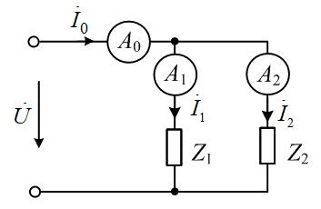
解答
总电流有效值 = 两支路之和（3+4=7）只在两电流同相时成立 → Z2 也是纯电阻，选 B。
复盘
反过来用相量三角形：若 Z2 是 L 或 C，总电流应是 32+42=5 A。
选 19
Z=5+j10 Ω，等效复导纳的实部（ ）S。
解答
Y=1255−j10=0.04−j0.08 S，实部 0.04，选 B。
复盘
G=R2+X2R，不是 1/R。
选 20
u=8sin(500t+50°) V、i=2sin(500t+140°) A（关联），元件属性与参数（ ）。
解答
i 超前 u 90° → 电容；XC=8/2=4 Ω → C=1/(500×4)=0.0005 F，选 B。
复盘
相位差先定性质，幅值比再定参数——两步各自独立。
选 21
纯电感（关联方向），u 与 i 的相位关系（ ）。
解答
u 超前 i 90°，选 B。
复盘
与选 24（电容）成对：感「压前流」、容「流前压」。
选 22（图 5.8）
并联谐振时 A₁ 读 9A（L 支路）、A₂ 读 15A（R 串 C 支路），A 读数（ ）。
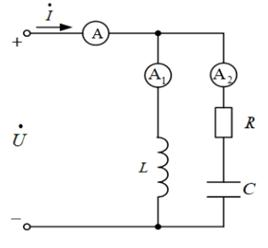
解答
谐振时端口电流与电压同相 = 总电流的纯有功分量：I=I22−I12=152−92=12 A，
选 B。
复盘
三角形：I2（斜边）、I1（纯无功直角边）、I（有功直角边）——并联谐振的「电流谐振」画像。
选 23（图 5.9）
XL=3 Ω、XC=1 Ω、U=10 V，UL=（ ）V。
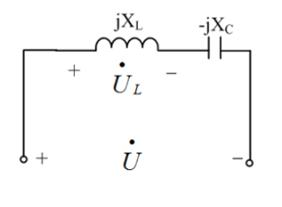
解答
I=U/∣j3−j1∣=10/2=5 A → UL=5×3=15 V，选 B。
复盘
两电抗串联先相减（3−1=2 Ω），再除电压得电流——谐振前夜的「部分谐振」题。
选 24
电容上（关联方向），电压与电流的相位关系（ ）。
解答
电流超前电压 90°，选 B。
复盘
与选 21 成对背诵。
选 25
R、L、C 串联电路发生谐振时（ ）。
解答
阻抗最小、电流最大，选 B。A 反了；C 中感抗=容抗；D 中两者等大反相。
复盘
串联谐振 = 电压谐振：L、C 上电压可以远大于总电压（分压到 QU）。
选 26（图 5.10）
V₁ 读 3V（R 上）、V₂ 读 4V（jX_L 上），V 读数（ ）。
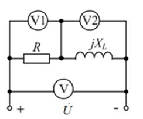
解答
U=32+42=5 V，选 C。
复盘
与选 3 同款三角形——电阻与电抗上的电压正交。
选 27（图 5.11）
U˙=10∠0° V，4Ω ∥ (−j4Ω)，吸收的有功功率（ ）。
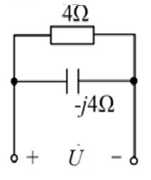
解答
Y=1/4+j/4 S，P=U2G=100×0.25=25 W，选 C。
复盘
并联电路用导纳算功率最快：只有电导吃有功。
选 28（图 5.12）
电压源发出 P=2 W，Z1=2Ω、Z2=2+j Ω，Z1 吸收（ ）W。
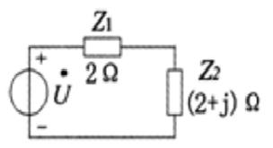
解答
只有电阻吃有功：总 R=2+2=4 Ω，I2=P源/4=0.5；PZ1=0.5×2=1 W，
选 B。
复盘
电流相同的有功分配 = 电阻比例分配，电抗只借不耗。
选 29（图 5.13）
u=210sint V、i=sin(t+45°) A，等效阻抗实部 R=（ ）Ω。
解答
U=5 V、I=1/2 A、φ=−45°：R=(U/I)cosφ=52×0.707=5 Ω，
选 C（Z=5−j5 Ω）。
复盘
实部 = 模 × cosφ——「阻抗三角形」的直接读数。
选 30
uR=52sin(ωt+10°)、uL=52sin(ωt+100°)，总电压 u（ ）。
解答
两有效值 5 V、相角差 90°：U=52、φ=55° → 幅值 10：
u=10sin(ωt+55°) V，选 B。
复盘
正交合成：模放大 2、相角取中间值。
选 31
负载 Z=1+j1 Ω，功率因数 λ=（ ）。
解答
cos45°=0.707，选 A。
复盘
R=X 的负载功率因数恒为 0.707，感性。
4. 填空题
填 1（图 5.14）
I=2 A（j5Ω ∥ 10Ω），平均功率 P=____W。
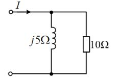
解答
Z=(j5×10)/(5+j10)=2+j4 → P=I2ReZ=4×2=8 W。
复盘
电流源激励下用 P=I2Req 一步到位。
填 2
电流幅值是有效值的____倍。
解答
2 倍。
复盘
正弦量专用，方波等其它波形不适用。
填 3（图 5.15）
等效阻抗为____Ω，呈____阻抗。
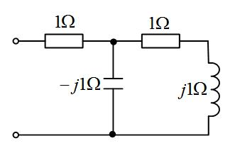
解答
末端 1+j1 与中节点 −j1 并联：(1+j1)(−j1)/(1+j1−j1)=1−j；串首段 1Ω：
复盘
「串联支路整体再与旁路并联」的次序不能反——先加后并。
填 4（图 5.16）
等效阻抗为______Ω。
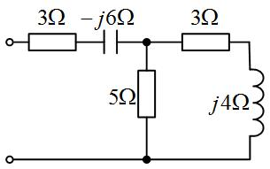
解答
右侧 3+j4=5∠53.13° 与 5Ω 并联：
8+j45(3+j4)=2.5+j1.25；串首段 3−j6：
复盘
分数阻抗乘共轭别丢分母——(15+j20)(8−j4)/80=2.5+j1.25。
填 5、6
u=10sin(400πt+60°) V：有效值 U=____V（2 位小数）、ω=____rad/s（填 5）；
ω=____π rad/s、f=____Hz（填 6）。
解答
U=10/2=7.07 V；ω=400π≈1256.64 rad/s；f=ω/2π=200 Hz。
复盘
填 5 要小数、填 6 要保留 π——同一道题的两种口径，看清单位再填。
填 7
50Hz 下 U˙=(−6−j8) V、I˙=−30 A 所代表的正弦量。
解答
U˙=10∠−126.87° → u=102sin(100πt−126.87°) V；
I˙=30∠180° → i=302sin(100πt+180°) A。
复盘
实部为负的相量先化极坐标再写瞬时值；ω=2πf=100π。
填 8
uab=100+100sinωt+30sin3ωt V，i=50sin(ωt−45°)+10sin(3ωt−60°)+20sin5ωt A。
i 的有效值____A、平均功率____W（1 位小数）。
解答
各次谐波分别算功率（直流无电流不贡献；5 次无对应电压不贡献）：
复盘
非正弦周期电路的两大纪律：有效值按「平方和开方」、功率按「各次谐波分别配对」。
填 9
u=102sin(250t+15°) V，C=8μF 时 P 达最大 100W。L=____H、R=____Ω。
解答
P 最大 = 串联谐振：ω2=1/(LC) → L=1/(2502×8×10−6)=2 H；
谐振时全部电压落在 R 上：R=U2/P=100/100=1 Ω。
复盘
「P 达最大」= 谐振的功率语言，与 XL=XC 等价。
填 10
u=52sinωt V 的有效值相量为________。
解答
U˙=5∠0° V。
复盘
初相为零也要写角度，相量的「模∠辐角」格式完整才有分。
填 11（图 5.17）与 计 7（图 5.28）
U˙S=100∠0° V、P=300 W、cosφ=1，求 XL、XC（12Ω 串 jXL 与 −jXC 并联）。
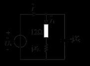
解答
cosφ=1 → 并联部分呈纯电导：I=P/(Ucosφ)=3 A（与电压同相）。
复盘
实部定 XL（有功 300W 全在 12Ω 上）、虚部抵消定 XC——功率因数为 1 的两个方程天然分开。
填 12（图 5.18）
u=100sin1000t V、i=10sin(1000t+30°) A：功率因数____、有功功率____W（3 位小数）。
解答
cos(−30°)=0.866；P=2100210×0.866=433.013 W。
复盘
电流超前 = 容性端口，功率因数照取正余弦。
填 13
u=52cos(ωt−210°) V 的有效值相量；50Hz 下 I˙=−30 A 的正弦量。
解答
cos 化 sin：52sin(ωt−120°) → U˙=5∠−120° V；
I˙=30∠180° → i=302sin(100πt+180°) A（原书末空单位印作 V，照抄存疑）。
复盘
cos 转 sin 一律 −90°：−210°−90°=−300°≡+60°？——按 sin(ωt−120°) 口径
与相量 ∠−120° 配套（两种化法差一个符号，以相量-瞬时值对应关系自洽为准）。
填 14（图 5.19）
U˙=20∠0° V、P=16 W、cosφ=0.8（R 串 −jXC）：I=____A、XC=____Ω。
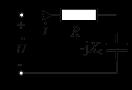
解答
I=P/(Ucosφ)=1 A；∣Z∣=20 Ω → R=16 Ω → XC=400−256=12 Ω。
复盘
I、R、XC 三个未知量靠 P、cosφ、∣Z∣ 三条关系逐个收敛。
填 15
u=15cos(400t+30°) V、i=3sin(400t+30°) A（关联）：元件____、复阻抗____、参数____。
解答
u（按 sin 化为 sin(400t+120°)）超前 i 90° → 电感；Z=U˙/I˙=5∠90°=j5 Ω；L=5/400=12.5 mH。
复盘
cos 与 sin 混写时先统一三角函数，再比相角。
填 16
功率因数 0.866（感性）、线电压 380V、平均功率 45kW，Y 形连接：每相等效阻抗模____Ω（1 位小数）、阻抗角____度。
解答
Il=3×380×0.86645000=79.0 A（Y 中 IP=Il）；
∣Z∣=79.0380/3=2.8 Ω；φ=arccos0.866=30°。
复盘
三相功率公式 3UlIlcosφ 一条就够，别用 3UPIP 换算两遍。
填 17（图 5.20）
R=2Ω、L=2H、C=0.25F、us=10sin2t V：uL(t)=、uC(t)=。
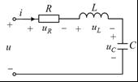
解答
XL=4 Ω、XC=2 Ω、Z=2+j2=22∠45°。幅值相量
I˙m=10/(22∠45°)=2.52∠−45° A：
复盘
幅值相量直接除复阻抗（不必先化有效值），最后按 sin 瞬时值写回。
填 18（图 5.21）
U=10 V、I=2 A、P=10 W（R 串 jXL）：R=___Ω、XL=____Ω。
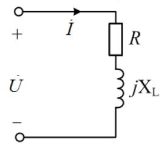
解答
cosφ=P/(UI)=0.5；R=∣Z∣cosφ=5×0.5=2.5 Ω；
XL=25−6.25=4.33 Ω。
复盘
U、I、P 三个表读数定一个串联阻抗——阻抗三角形的完整还原。
填 19
u=−52sin(100t+120°) V 的有效值相量（极坐标）：模____V、辐角____°。
解答
负号 = 相角加 180°：u=52sin(100t−60°) → 模 5 V、辐角 −60°。
复盘
「负号先吃掉」再读初相，比直接对 −52sin 取相量少出错。
填 20
电容、电感伏安关系的相量形式。
解答
电容（关联）：I˙=jωCU˙；电感：U˙=jωLI˙。
复盘
微分变乘 jω——相量法的全部好处就在这两条。
填 21
15Ω 电阻上 u=100+22.4sin(ωt−45°)+4.11sin(3ωt−67°) V：有效值____V、平均功率____W（整数）。
解答
复盘
纯电阻的各次谐波功率都往同一个电阻里灌——直接 U2/R 一步收口。
5. 计算题
计 1（图 5.23）
us=2002sin103t V、ω=103 rad/s。求戴维南等效电路。
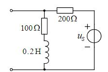
解答
jωL=j200 Ω。按图：Uoc=us 经 200Ω 与 (100+j200) 分压：
置零后 Zth=200∥(100+j200)≈107.7+j61.5 Ω。
复盘
⚠ 本题拓扑读数（200Ω 与源的位置）两轮读图有出入，上为盲测口径；两条式子
「开路电压=除源分压、Zth=除源并联」结构相同是本题的特征，请对教材图复核元件位置。
计 2（图 5.24）
R=100Ω、L=0.4 H、C=5μF、us=2202sin500t V。求电源发出的 P、Q、S。
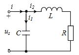
解答
XL=200 Ω、XC=400 Ω。C 支路电流 IC=220/400=0.55 A；LR 支路
ILR=220/1002+2002=0.984 A：
复盘
并联电路的无功按「感性 − 容性」代数和，符号自己带方向，比记「加减口诀」稳。
计 3（图 5.25）
us=502sint V、is=102sin(t+30°) A、L=5 H、C=1/3 F。用叠加定理求 uC。
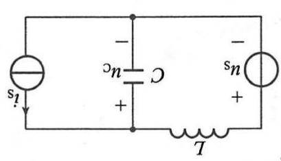
解答
XL=5 Ω、XC=3 Ω（ω=1）。
us 单独（is 开路）：分压 U˙C′=50∠0°×j5−j3−j3=−75∠0°；
is 单独（us 短路）：L 与 C 并联分流，U˙C′′=j5−j3j5×10∠30°×(−j3)=75∠−60°。
复盘
叠加两分量频率相同（同是 ω=1）才能直接相加——不同频率必须回到瞬时值分别算功率。
计 4（图 5.26）
求戴维南等效电路。
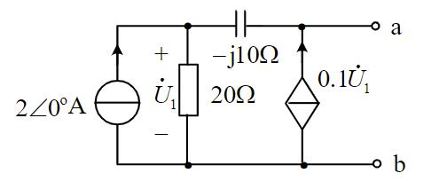
解答
开路：顶节点 KCL 2+0.1U˙1=U˙1/20 → U˙1=−40 V；
U˙oc=Va=U˙1+0.1U˙1×(−j10)=−40+j40=56.6∠135° V。
外施 I˙：I˙+0.1U˙1=U˙1/20 → U˙1=−20I˙；
Va=U˙1−j10U˙1/20=(−20+j10)I˙ →
复盘
受控源又造出负电阻（ReZth<0）——含受控源一端口的常规输出。⚠ 若受控源箭头
反向则全式变号，请对教材图复核。
计 5
RLC 串联：us=2202sinωt V、R=10Ω、L=300 mH、C=50μF。求 P、Q、S。
解答
⚠ 题面未印 ω 数值（疑漏），按工频 ω=314 rad/s：XL=94.2 Ω、
XC=63.7 Ω、Z=10+j30.5=32.1∠71.9°、I=220/32.1=6.85 A：
复盘
若按 ω=100π 计算结果差千分之几（P≈467 W）——量级不变，等老师补 ω 口径。
计 6（图 5.27）
Z 可任意变化，求其获得最大功率时的值与最大功率。
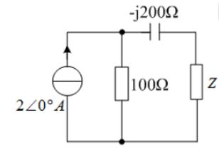
解答
开路：2A 全走 100Ω → U˙oc=200∠0° V；置零：Zth=100−j200 Ω。
复盘
最大功率的共轭匹配只看实部吃功率：Pmax=Uoc2/4Rth，虚部只影响电流相角。
计 8（图 5.29）
ZL 可变，求其最大功率。
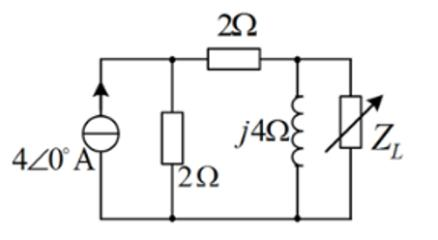
解答
开路：Vn=4(1+j)=42∠45° V（节点方程见下）；置零：Zth=(2+2)∥j4=2+j2 Ω。
（开路节点方程：M 点 4=VM/2+(VM−Vn)/2、n 点 (VM−Vn)/2=Vn/j4。）
复盘
⚠ 盲测按另一种节点口径给 Zth=3.6+j0.8 Ω、Pmax=2.22 W；整理者按「左 2Ω 串顶 2Ω
共 4Ω 再与 j4 并联」复核为 2+j2 Ω（功率平衡与方程均自洽），两解并列、待对教材图裁决。
计 9（图 5.30）
U˙=20∠0° V，利用复功率求 P、Q、S。
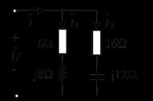
解答
Y=6+j81+16−j121=(0.06−j0.08)+(0.04+j0.03)=0.1−j0.05 S
→ Z=8+j4 Ω、I=20/8.944=2.236 A：
复盘
复功率 Sˉ=U˙I˙∗=P+jQ 一条式子同时给出有功与无功——「利用复功率」的题眼。
计 10（图 5.31）
I1=10 A、I2=102 A、U=200 V、R=5Ω、R2=XL。画相量图求 I、XC、XL、R2。
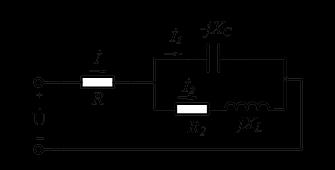
解答
设并联部分电压 U˙p=Up∠0°：I˙1=j10（容性）、
I˙2=102∠−45°=10−j10（R2=XL → 阻抗角 45°）：
干路压降 IR=50 V → Up=200−50=150 V：
复盘
相量图先画 U˙p 作基准：I˙1 竖直向上、I˙2 斜向下 45°、合成的 I˙ 恰好水平
——「恰好水平」是 R2=XL 条件的几何体现，也是校验答案的免费手段。
6. 小结
第五章的题可以归成四个「一」：
- 一个三角形：电压三角形 / 阻抗三角形 / 功率三角形（选 11/26/30、填 14/18、计 10）——
直角边、斜边、角度互换。
- 一条功率链：P、Q、S、cosφ 四个量知二求二（选 5/7/13/28、填 1/11/12/16、计 2/5/9）。
- 一套相量化简：串并联阻抗（选 19/27、填 3/4/17）——复数乘除不手算，交给公式。
- 一个共轭匹配：ZL=Zth∗、Pmax=Uoc2/4Rth（选 8、计 4/6/8）——与第四章同款，
只是把实数换成了复数。
完成边界
- 已整理：第五章 62 题题面逐字转抄 + 配图 30 张入库（无图 5.22）；全部解答与复盘。
- 双签：2026-09-28，独立子代理只拿题目页重算 62 题：57 题一致；整理者修正 3 处读图误差
（填 8 的有效值 38.7 A、选 7 按 ∠30° 取 −25 var、选 8 按串联口径取 4 Ω），盲测复核 2 处
（计 8 的 Zth 分歧两解并列、计 1 的拓扑口径）。
- 〔待核对〕：① 计 5 题面未印 ω（按工频 314 rad/s 计）；② 计 4 受控源极性；③ 计 8 的
Zth 两解（2+j2 vs 3.6+j0.8）；④ 选 13/17 的容性/电阻口径；⑤ 填 13 原书末空单位印作 V。
- 未完成：第六至九章（分章推进中）。